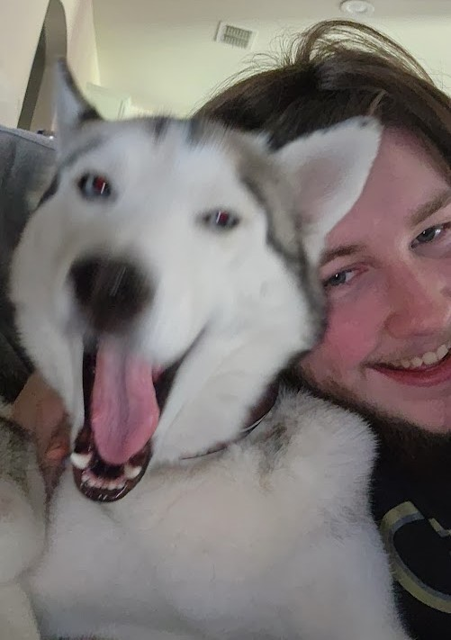

Kyle Phillips
Experience
Purdue Computer Science, Purdue University - CS 25200 UTA Spring 2025
January 2025 - May 2026
- Undergraduate Teaching Assisstant for CS 25200 Systems Programming under Professor Gustavo Rodriguez-Rivera
- Answered Student Questions during Lab, Office Hours, and on Ed Discussion, the Student Discussion Board
- Proctored and Graded Lab Assignments and Exams
The Data Mine, Purdue University – Undergraduate Data Science Researcher
August 2022 – May 2024
- Freshman Year (Fall '22 – Spring '23): MISO
- Worked in Python with line ratings and weather data
- Sophomore Year (Fall '23 – Spring '24): Purdue Athletics Football
- Used React to build an app for their strength and conditioning data
Education
Purdue University, West Lafayette, IN – B.S. in Computer Science and Data Science
August 2022 – May 2026
- Major: Computer Science (Concentration in Machine Intelligence)
- Major: Data Science
- Minor: Mathematics
- Minor: English
- 3.64 GPA
- Achedived Dean's List every semester
- Participated in Data Mine Corporate Partners Cohort
- CS Coursework: Java, C, Python, Data Structures & Algorithms, Architecture, Systems, Intro to Data Science, Intro to AI, Machine Learning, Large Scale Data Analysis, Analysis of Algorithms, Data Science Capstone
- MA/STAT Coursework: Calculus I-III, Statistics for Data Science, Linear Algebra, Probability, Statistical Theory,
- Other Coursework: Earth Science, Ethics, Scientific Presentation, Spanish, and English Literature
- More info on the Education page
Skills
- Programming: Java, C, Python, Assembly, C#, C++
- Web: HTML, CSS, JavaScript, React
- Tools: Git
Activities
SIGGD – Video Game Design and Programming
August 2022 – May 2026
Team 3176 – FIRST Robotics Competition – Programming, Leadership, and Competition Team
August 2018 – July 2022